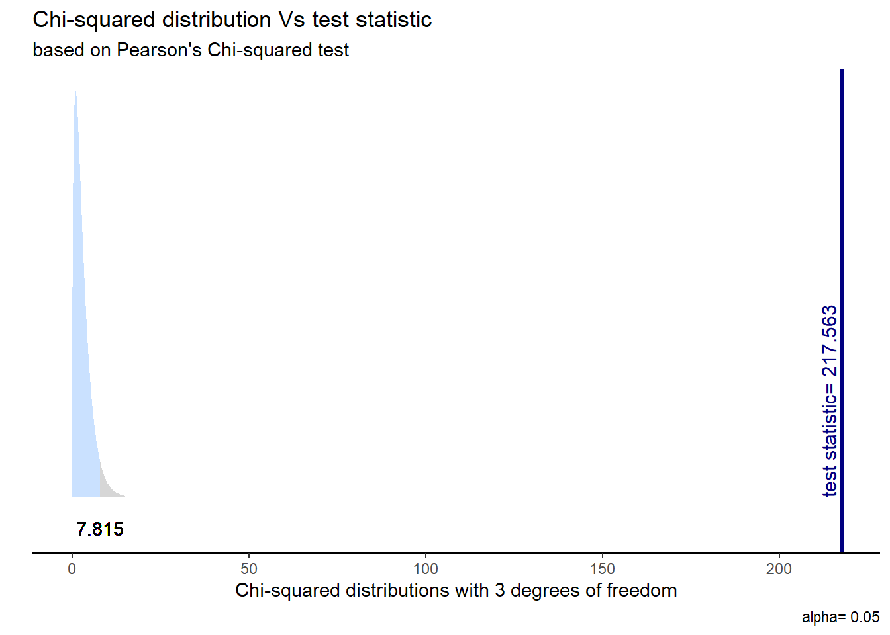

pacman::p_load(
dplyr, # Manipulacion datos
sjPlot, # Graficos y tablas
sjmisc, # Descriptivos
kableExtra, # Tablas
psych, # Estadísticos
broom,
rempsyc,
sjstats,
gginference
) # Varios
options(scipen = 999) # para desactivar notacion cientifica
rm(list = ls()) # para limpiar el entorno de trabajoPráctico 5: Asociación entre categóricas
Sesión del lunes, 13 de octubre de 2025
Objetivo de la práctica
El objetivo de esta guía práctica es introducir herramientas estadísticas para el análisis de relación entre variables categóricas (nominales).
En detalle, aprenderemos a:
- Aplicar coeficientes de correlación entre variables categóricas (nominales-ordinales)
- Generar y analizar tablas de contingencia (o cruzadas)
- Estimar e interpretar la prueba de Chi-cuadrado (\(X^2\))
- Interpretar medidas de magnitud para pruebas con variables categóricas
- Realizar pruebas de hipótesis para proporciones
En esta guía utilizaremos un ejemplo que desarrollaremos progresivamente para exponer los contenidos. Al final de esta guía se proporciona un ejercicio autónomo que deberá resolver de manera individual o grupal tomando como referencia el ejemplo aquí expuesto.
1. Pregunta de investigación
En esta práctica trabajaremos con un subconjunto de datos previamente procesados de la Encuesta de Caracterización Socioeconómica (CASEN) del año 2022, elaborada por el Ministerio de Desarrollo Social y Familia. Para este ejercicio, obtendremos directamente esta base desde internet. No obstante, también tienen la opción de acceder a la misma información a través del siguiente enlace: CASEN 20222. Desde allí, podrás descargar el archivo que contiene el subconjunto procesado de la base de datos CASEN 2022.
2. Datos y librerías
Comencemos por preparar nuestros datos. Iniciamos cargando las librerías necesarias.
Cargamos los datos directamente desde internet.
load(url("https://github.com/cursos-metodos-facso/datos-ejemplos/raw/main/casen_proc.RData")) #Cargar base de datosA continuación, exploramos el subset de datos proc_casen.
names(proc_casen) # Nombre de columnas [1] "id_vivienda" "folio" "id_persona" "hogar"
[5] "nucleo" "varunit" "varstrat" "expr"
[9] "edad" "sexo" "educ" "activ"
[13] "y1" "ytrabajocor" "pobreza_multi_5d" "o15"
[17] "qaut" "fdt" "ocupado" "desocupado"
[21] "inact" "hijo" "n_educ" "universitaria"
[25] "tipo_ocup" "ss_salud" "ayuda_moverse" "ayuda_thogar"
[29] "disc_fisica" dim(proc_casen) # Dimensiones[1] 3000 29Contamos con 29 variables (columnas) y 3000 observaciones (filas).
3. Análisis
3.1 Correlación para variables nominales
Al igual que otros coeficientes de correlación, las correlaciones entre categóricas:
- Oscila entre -1 y 1.
- Indica la dirección y fuerza de asociación entre variables.
- Su tamaño de efecto se puede interpretar a partir de ciertos estándares.
- Se interpreta de la misma forma que otros coeficientes de correlación.
3.1.1 Correlación punto biserial
La correlación punto biserial se utiliza para calcular la correlación entre una variable categórica dicotómica y una variable continua.
Veamos la frecuencia de sexo y la media de ingresos y1.
sjmisc::frq(proc_casen$sexo)Sexo (x) <numeric>
# total N=3000 valid N=3000 mean=1.53 sd=0.50
Value | Label | N | Raw % | Valid % | Cum. %
---------------------------------------------------
1 | 1. Hombre | 1404 | 46.80 | 46.80 | 46.80
2 | 2. Mujer | 1596 | 53.20 | 53.20 | 100.00
<NA> | <NA> | 0 | 0.00 | <NA> | <NA>mean(proc_casen$y1, na.rm = T)[1] 619435.3Obtengamos la correlación punto biserial entre sexo e ingresos.
cor.test(proc_casen$sexo, proc_casen$y1)
Pearson's product-moment correlation
data: proc_casen$sexo and proc_casen$y1
t = -4.0718, df = 912, p-value = 0.00005069
alternative hypothesis: true correlation is not equal to 0
95 percent confidence interval:
-0.19676351 -0.06937883
sample estimates:
cor
-0.1336231 3.1.2 Correlación tetracorica
La correlación tetracórica se utiliza para calcular la correlación entre dos variables binarias categóricas, es decir, variables nominales dicómoticas (solo dos posibles valores).
Veamos las frecuencias de sexo y disc_fisica.
sjmisc::frq(proc_casen$sexo)Sexo (x) <numeric>
# total N=3000 valid N=3000 mean=1.53 sd=0.50
Value | Label | N | Raw % | Valid % | Cum. %
---------------------------------------------------
1 | 1. Hombre | 1404 | 46.80 | 46.80 | 46.80
2 | 2. Mujer | 1596 | 53.20 | 53.20 | 100.00
<NA> | <NA> | 0 | 0.00 | <NA> | <NA>sjmisc::frq(proc_casen$disc_fisica)Discriminado por su apariencia física (x) <numeric>
# total N=3000 valid N=3000 mean=1.03 sd=0.17
Value | N | Raw % | Valid % | Cum. %
---------------------------------------
1 | 2916 | 97.20 | 97.20 | 97.20
2 | 84 | 2.80 | 2.80 | 100.00
<NA> | 0 | 0.00 | <NA> | <NA>Obtengamos la correlación tetrácorica entre sexo y discriminación por apariencia física.
matriz <- proc_casen %>% select(sexo, disc_fisica) # creamos matriz con var de interes
psych::tetrachoric(matriz, na.rm = T)Call: psych::tetrachoric(x = matriz, na.rm = T)
tetrachoric correlation
sexo dsc_f
sexo 1.00
disc_fisica -0.05 1.00
with tau of
sexo disc_fisica
-0.08 1.91 3.1.3. Correlación Policórica
La correlación policórica se utiliza para calcular la correlación entre dos variables ordinales categóricas, es decir, variables ordinales cuyos posibles valores siguen un orden (por ejemplo, variables tipo Likert).
Veamos las frecuencias de ayuda_moverse y ayuda_thogar.
sjmisc::frq(proc_casen$ayuda_moverse)s33c. Últ. 30 días, ayuda de otra persona para: Moverse dentro de la casa (x) <numeric>
# total N=3000 valid N=68 mean=3.21 sd=1.49
Value | Label | N | Raw % | Valid % | Cum. %
----------------------------------------------------------
-99 | No responde | 0 | 0.00 | 0.00 | 0.00
-88 | No sabe | 0 | 0.00 | 0.00 | 0.00
1 | 1. Nunca | 13 | 0.43 | 19.12 | 19.12
2 | 2. Casi nunca | 9 | 0.30 | 13.24 | 32.35
3 | 3. Algunas veces | 18 | 0.60 | 26.47 | 58.82
4 | 4. Muchas veces | 7 | 0.23 | 10.29 | 69.12
5 | 5. Siempre | 21 | 0.70 | 30.88 | 100.00
<NA> | <NA> | 2932 | 97.73 | <NA> | <NA>sjmisc::frq(proc_casen$ayuda_thogar)s33h. Últ. 30 días, ayuda de otra persona para: Realizar sus tareas del hogar (x) <numeric>
# total N=3000 valid N=80 mean=3.80 sd=1.39
Value | Label | N | Raw % | Valid % | Cum. %
----------------------------------------------------------
-99 | No responde | 0 | 0.00 | 0.00 | 0.00
-88 | No sabe | 0 | 0.00 | 0.00 | 0.00
1 | 1. Nunca | 10 | 0.33 | 12.50 | 12.50
2 | 2. Casi nunca | 3 | 0.10 | 3.75 | 16.25
3 | 3. Algunas veces | 17 | 0.57 | 21.25 | 37.50
4 | 4. Muchas veces | 13 | 0.43 | 16.25 | 53.75
5 | 5. Siempre | 37 | 1.23 | 46.25 | 100.00
<NA> | <NA> | 2920 | 97.33 | <NA> | <NA>Obtengamos la correlación policórica entre si la persona necesitó ayuda para moverse dentro de la casa y si necesitó ayuda para realizar tareas dentro del hogar, en los últimos 30 días.
matriz <- proc_casen %>% select(ayuda_moverse, ayuda_thogar) # creamos matriz con var de interes
psych::polychoric(matriz, na.rm = T)Call: psych::polychoric(x = matriz, na.rm = T)
Polychoric correlations
ayd_m ayd_t
ayuda_moverse 1.00
ayuda_thogar 0.82 1.00
with tau of
1 2 3 4
ayuda_moverse -0.87 -0.46 0.22 0.499
ayuda_thogar -1.15 -0.98 -0.32 0.0943.2 Tablas de contingencia
Una tabla de contingencia es una de las maneras más simples y útiles para representar el cruce entre dos variables categóricas.
Con ella, podemos obtener en las celdas las frecuencias conjuntas entre ambas variables, es decir, cuántos casos de una determinada categoría de la variable Y ocurren conjuntamente con una determinada categoría de la variable X.
Además, podemos presentar los totales de cada fila y columna al exterior de la tabla, también conocidas como frecuencias marginales.
Veamos un ejemplo con ss_salud y universitaria:
sjPlot::sjt.xtab(var.row = proc_casen$ss_salud, var.col = proc_casen$universitaria,
show.summary = F, emph.total = T)| s13. ¿A qué sistema previsional de salud pertenece? |
Educación superior alcanzada (si/no) |
Total | |
| No | Sí | ||
| 1. Sistema Público FONASA |
2027 | 524 | 2551 |
| 2. Isapre | 111 | 167 | 278 |
| 3. FF.AA. y del Orden |
37 | 22 | 59 |
| 4. Ninguno (particular) |
61 | 15 | 76 |
| Total | 2236 | 728 | 2964 |
Veamos cómo incorporar el porcentaje fila y columna en la tabla.
sjPlot::sjt.xtab(var.row = proc_casen$ss_salud,
var.col = proc_casen$universitaria,
show.summary = F,
emph.total = T,
show.row.prc = T, # porcentaje fila
show.col.prc = T # porcentaje columna
)| s13. ¿A qué sistema previsional de salud pertenece? |
Educación superior alcanzada (si/no) |
Total | |
| No | Sí | ||
| 1. Sistema Público FONASA |
2027 79.5 % 90.7 % |
524 20.5 % 72 % |
2551 100 % 86.1 % |
| 2. Isapre | 111 39.9 % 5 % |
167 60.1 % 22.9 % |
278 100 % 9.4 % |
| 3. FF.AA. y del Orden |
37 62.7 % 1.7 % |
22 37.3 % 3 % |
59 100 % 2 % |
| 4. Ninguno (particular) |
61 80.3 % 2.7 % |
15 19.7 % 2.1 % |
76 100 % 2.6 % |
| Total | 2236 75.4 % 100 % |
728 24.6 % 100 % |
2964 100 % 100 % |
Aquí, los porcentajes fila aparecen en azul y los porcentajes columna en verde.
3.3. Prueba de hipótesis con Chi cuadrado (\(X^2\))
Para determinar si existe una asociación significativa entre dos variables categóricas se utiliza la prueba de Chi-cudrado (\(X^2\)). Esta se basa en un test de diferencia, donde se compara nuestra tabla de contingencia y una tabla donde no existe asociación entre variables (\(H_0\)), que representa la hipótesis nula. La lógica detrás es que si nuestra tabla es significativamente distinta de una tabla sin asociación, entonces podemos rechazar la hipóteis nula.
Prueba de Chi-cuadrado
Contrastamos la hipótesis nula (o de trabajo) de que las variables son independientes entre ellas: \[ H_{0}: \pi_{fc} = \pi_{f}\pi_{c} \]
En relación a una hipótesis alternativa sobre que las variables están relacionadas: \[ H_{A}: \pi_{fc} \neq \pi_{f}\pi_{c} \]
Veamos un ejemplo con nuestros datos. Evaluemos si el nivel educacional se relaciona con el tipo de sistema de salud al que pertenecen las personas en Chile durante el 2022.
En R, utilizamos la función chisq.test():
chi_results <- chisq.test(table(proc_casen$ss_salud, proc_casen$universitaria))
chi_results
Pearson's Chi-squared test
data: table(proc_casen$ss_salud, proc_casen$universitaria)
X-squared = 217.56, df = 3, p-value < 0.00000000000000022Obtuvimos nuestro resultado, pero no es muy amigable a la vista. Generemos una tabla de calidad para que sea reportable.
stats.table <- tidy(chi_results, conf_int = T)
nice_table(stats.table)statistic | p | parameter | Method |
|---|---|---|---|
217.56 | < .001*** | 3 | Pearson's Chi-squared test |
Visualicemos la distribución de esta prueba y su zona de rechazo.
ggchisqtest(chi_results)
A partir de estos resultados, podemos reportar lo siguiente:
A raíz de la prueba de \(X^2\), vemos que existe evidencia para rechazar la hipótesis nula sobre no asociación. Por ende, la asociación entre el nivel educacional y el tipo de sistema de salud al que pertenecen las personas en Chile es estadísticamente significativa (\(X^2\) = 217, p < 0.05)
3.4. Tamaño de efecto con Phi y V de Cramer
Estadístico Phi (Φ)
El estadístico Phi mide la asociación entre dos variables categóricas en una tabla de contingencia de 2x2. La fórmula es:
\[ \Phi = \sqrt{\frac{\chi^2}{n}} \]
donde:
- \(\chi^2\) es el valor del estadístico chi-cuadrado,
- \(n\) es el tamaño total de la muestra.
El valor de \(\Phi\) varía entre -1 y 1. Un valor de 0 indica ausencia de asociación, mientras que valores cercanos a -1 o 1 indican una asociación más fuerte.
V de Cramer
El V de Cramer es una extensión del estadístico Phi para tablas de contingencia mayores de 2x2. Su fórmula es:
\[ V = \sqrt{\frac{\chi^2}{n(k-1)}} \]
donde:
- \(\chi^2\) es el valor del chi-cuadrado,
- \(n\) es el tamaño de la muestra,
- \(k\) es el número de filas o columnas, el que sea menor.
Los valores de \(V\) también varían entre 0 y 1, donde 0 indica ausencia de asociación, y valores cercanos a 1 indican una asociación más fuerte.
En nuestro ejemplo, nuestra tabla de contingencia es de 4x2, por ende, debemos usar el estadístico V de Cramer. En R lo podemos calcular directamente siguiendo la formula:
# Guardar el test de chi cuadrado
chi_result <- chisq.test(table(proc_casen$ss_salud, proc_casen$universitaria))
n <- na.omit(proc_casen %>% select(ss_salud, universitaria)) %>% nrow()
# Cálculo de V de Cramer
cramer <- sqrt(chi_result$statistic / n*(2-1))
cramerX-squared
0.2709275 o directamente con sjstats
sjstats::cramer(table(proc_casen$ss_salud, proc_casen$universitaria))[1] 0.2709275Con un valor de 0.271, vemos que la magnitud de la asociación entre las variables es moderada.
Ejercicio autónomo
A partir de la base de datos de proc_elsoc responda las siguientes preguntas:
¿En qué medida se relacionan los ingresos con la justificación de la violencia por el cambio social en Chile al año 2019?
¿En qué medida se relacionan el nivel educacional y la justificación de la violencia por el control social en Chile al año 2019?
Para eso, descargue la siguiente base de datos proc_elsoc:
# Cargar bbdd desde internet
load(url("https://github.com/cursos-metodos-facso/datos-ejemplos/raw/refs/heads/main/elsoc2019_jv.RData"))seleccione las siguientes variables:
proc_elsoc <- elsoc %>% # seleccionamos
dplyr::select(
ingreso,
ingreso_rec,
educ,
educ_rec,
starts_with("jv")
)y explore los estadísticos descriptivos:
proc_elsoc %>%
select(ingreso, ingreso_rec, educ, educ_rec, jv_cambio, jv_cambio_rec, jv_control, jv_control_rec) %>%
sjmisc::descr(show = c("label", "range", "mean", "sd", "NA.prc", "n")) %>%
kable(., "markdown")| var | label | n | NA.prc | mean | sd | range | |
|---|---|---|---|---|---|---|---|
| 3 | ingreso | Ingresos del entrevistado | 2018 | 40.9423471 | 537927.1560951 | 587217.4858725 | 15000000 (0-15000000) |
| 4 | ingreso_rec | Ingresos mayores a 800.000 (binario) | 2018 | 40.9423471 | 0.1367691 | 0.3436886 | 1 (0-1) |
| 1 | educ | Nivel educacional del entrevistado | 3413 | 0.1170618 | 5.2510987 | 2.2385444 | 9 (1-10) |
| 2 | educ_rec | Educación universitaria o más (binario) | 3413 | 0.1170618 | 0.1259889 | 0.3318854 | 1 (0-1) |
| 5 | jv_cambio | Justificación de la violencia por el cambio social | 3405 | 0.3511853 | 1.4763583 | 0.9551252 | 4 (1-5) |
| 6 | jv_cambio_rec | Justificación de la violencia por el cambio social (binario) | 3405 | 0.3511853 | 0.2499266 | 0.4330339 | 1 (0-1) |
| 7 | jv_control | Justificación de la violencia por el control social | 3407 | 0.2926544 | 1.4029938 | 0.8712963 | 4 (1-5) |
| 8 | jv_control_rec | Justificación de la violencia por el control social (binario) | 3407 | 0.2926544 | 0.2180804 | 0.4130029 | 1 (0-1) |
Para la pregunta a)
- Estime la correlación adecuada para
ingreso_recyjv_control_rec.
matriz <- proc_elsoc %>%
dplyr::select(jv_cambio_rec, ingreso_rec) # creamos matriz con var de interes
psych::tetrachoric(matriz, na.rm = T)Call: psych::tetrachoric(x = matriz, na.rm = T)
tetrachoric correlation
jv_c_ ingr_
jv_cambio_rec 1.00
ingreso_rec 0.02 1.00
with tau of
jv_cambio_rec ingreso_rec
0.67 1.09 - Presente en una tabla de contingencia entre las variables
ingreso_recyjv_control_rec.
proc_elsoc %>%
sjPlot::sjtab(ingreso_rec,
jv_cambio_rec,
show.row.prc = TRUE, # porcentaje fila
show.col.prc = TRUE # porcentaje columna
)| Ingresos mayores a 800.000 (binario) |
Justificación de la violencia por el cambio social (binario) |
Total | |
|---|---|---|---|
| No justifica | Justifica | ||
| Menor a 800k | 1273 73.3 % 86.5 % |
463 26.7 % 85.7 % |
1736 100 % 86.3 % |
| Mayor a 800k | 199 72.1 % 13.5 % |
77 27.9 % 14.3 % |
276 100 % 13.7 % |
| Total | 1472 73.2 % 100 % |
540 26.8 % 100 % |
2012 100 % 100 % |
| χ2=0.126 · df=1 · φ=0.010 · p=0.723 | |||
- Calcule el estadístico de Chi cuadrado (\(X^2\)) entre las variables
ingreso_recyjv_control_rec.
chi_results <- chisq.test(proc_elsoc$ingreso_rec, proc_elsoc$jv_cambio_rec)
stats.table <- tidy(chi_results, conf_int = T)
nice_table(stats.table)statistic | p | parameter | Method |
|---|---|---|---|
0.13 | .723 | 1 | Pearson's Chi-squared test with Yates' continuity correction |
- Interprete los resultados obtenidos. Responda la pregunta de investigación a raíz de los calculos desarrollados.
Para la pregunta b)
- Estime la correlación adecuada para
educyjv_control_rec.
Para determinar cuál es la correlación adecuada entre educ y jv_control_rec tenemos que tener en consideración el nivel de medición de estas variables. Vemos que educ es continua y jv_control_rec es una variable categorica nominal binaria. Para estos casos, una buena alternativa es la correlación punto biserial. Estimemosla en R:
cor.test(proc_elsoc$educ, proc_elsoc$jv_control_rec)
Pearson's product-moment correlation
data: proc_elsoc$educ and proc_elsoc$jv_control_rec
t = -3.3769, df = 3401, p-value = 0.0007414
alternative hypothesis: true correlation is not equal to 0
95 percent confidence interval:
-0.09123086 -0.02425427
sample estimates:
cor
-0.05780761 Vemos que la correlación entre el nivel educacional (educ) y la justificación de la violencia por el control social (jv_control_rec) es negativa, muy pequeña y es estadísticamente significativa (\(r\) = -0.06; p < 0.05).
- Presente en una tabla de contingencia entre las variables
educ_recyjv_control_rec.
Seguimos trabajando con jv_control_rec, pero ahora con educ_rec que corresponde al nivel educacional recodificado en dos categorías: 1 = Universitario o más y 0 = No universitario. Una tabla de contingencia la podemos realizar con la función sjtab() del paquete sjPlot.
sjPlot::sjtab(proc_elsoc, educ_rec, jv_control_rec, show.row.prc = TRUE, show.col.prc = TRUE)| Educación universitaria o más (binario) |
Justificación de la violencia por el control social (binario) |
Total | |
|---|---|---|---|
| No justifica | Justifica | ||
| No universitaria | 2315 77.8 % 87 % |
661 22.2 % 89.2 % |
2976 100 % 87.5 % |
| Universitaria o más | 347 81.3 % 13 % |
80 18.7 % 10.8 % |
427 100 % 12.5 % |
| Total | 2662 78.2 % 100 % |
741 21.8 % 100 % |
3403 100 % 100 % |
| χ2=2.448 · df=1 · φ=0.028 · p=0.118 | |||
- Calcule el estadístico de Chi cuadrado (\(X^2\)) entre las variables
educ_recyjv_control_rec.
El Chi cuadrado (\(X^2\)) entre las variables educ_rec y jv_control_rec los podemos obtener a partir de la función chisq.test():
chisq.test(proc_elsoc$educ_rec, proc_elsoc$jv_control_rec)
Pearson's Chi-squared test with Yates' continuity correction
data: proc_elsoc$educ_rec and proc_elsoc$jv_control_rec
X-squared = 2.4482, df = 1, p-value = 0.1177A partir de estos resultados, podemos reportar lo siguiente:
A raíz de la prueba de \(X^2\), vemos que no existe evidencia para rechazar la hipótesis nula sobre no asociación. Por ende, la asociación entre el nivel educacional y la justificación de la violencia por el control social no es estadísticamente significativa (\(X^2\) = 2.448, p > 0.05)
- Interprete los resultados obtenidos. Responda la pregunta de investigación a raíz de los calculos desarrollados.
En el presente ejercicio indagamos en la relación entre el nivel educacional de las personas y las justificaciones de la violencia por el control social en Chile al año 2019. Considerando que las variables de estudio tenían un nivel de medición categórico nominal, utilizamos la técnica de Chi-cuadrado \(X^2\) para el contraste de hipótesis.
La hipótesis planteada inicialmente sugería que el nivel educacional podría estar asociado con las actitudes hacia la justificación de la violencia como una forma de control social. Sin embargo, los resultados de la prueba \(X^2\), indican que no existe una asociación estadísticamente significativa entre estas variables (\(X^2\) = 2.448, p > 0.05).
Esto significa que, según los datos analizados, el nivel educacional no parecen ser un factor que influya en la justificación de la violencia para el control social, por lo tanto, no podemos concluir que el nivel educacional estén relacionados con la justificación de la violencia en el contexto del cambio social en Chile en 2019.